Every screen, every command, every flag
This page is the whole surface in one place: every screen of the web interface, the three destination surfaces that live inside one of them, and the terminal docked under them all; the twenty-four commands of the retnd command line; and every subcommand and flag of the installer. The first-run tutorial walks the one path a new install takes; this one does not walk anything, it enumerates. Scripted workflows have a guide of their own, because the hook lifecycle needs prose around its pictures rather than a table of controls.
- The web interface
- Dashboard
- Backup sets
- Backup set detail
- Backups
- Backup detail
- Workflow run
- Snapshots
- Snapshot detail
- Restore from a snapshot
- Snapshot retention and holds
- Activity
- Quarantine
- Settings
- Backup defaults
- Repository domains
- Define a repository domain
- Repository health
- Repository maintenance
- Storage destinations
- Adding a destination
- Configuring a destination
- Catalog recovery
- The docked terminal
- The command line
- Every command
- Where a change is written
- Exit codes
- install_docker_host.py
- Its eight subcommands
- Every flag
- Its exit codes
The web interface
Seven items in the sidebar — Dashboard, Backup sets, Backups, Activity, Quarantine, Repositories, Settings — one screen behind each, detail screens you reach by opening a row on the list above them, the four incremental-engine screens a snapshot-taking backup set adds to its own page, a catalog-recovery screen reached from the footer, and a terminal docked to the bottom of all of them. The top bar carries the service badge (running, and which version), a light/dark toggle and Sign out. The sidebar footer says which platform the deployment thinks it is on, which is the thing to check first when a NAS-specific feature is missing.
Three of the surfaces below have no route of their own: the storage destinations list and the two wizards that add and configure one all live inside Settings. They are enumerated separately anyway, because each is a screenful of controls that write configuration, and a reader looking one up should not have to find it inside a table row about a card.
Nearly everything on these screens is reachable from the command line as well, and several screens say so in place: a control that changes configuration prints the retnd command that does the same thing, right underneath itself. Where the command cannot carry a field the screen is about to save, the screen prints the command and names the fields it leaves out, rather than printing a line that quietly configures less than was asked for.
Dashboard
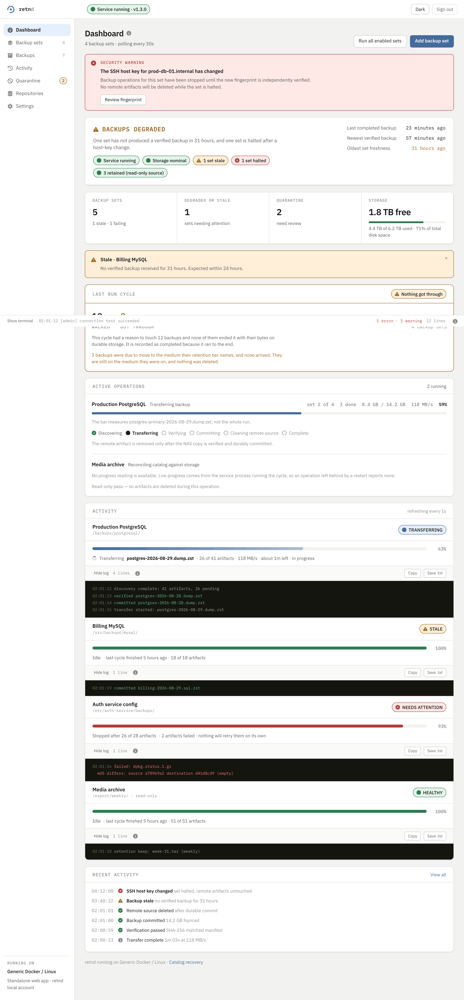
| Region | What it shows | What it is for |
|---|---|---|
| Security warning | a changed SSH host key, per set | The set is halted, not retried. Nothing on the remote is deleted while it is halted, and Review fingerprint is the only way past it, because accepting a new key silently is the failure this product refuses to have. |
| Health summary | a verdict, then pills | Degraded, and why: which sets are stale, which are halted, how long since the newest verified backup, and how much room is left. The pills are counts, not links. |
| Count cards | backup sets, degraded or stale, quarantine, storage | The four numbers worth waking up to. Quarantine here is the same count as the sidebar badge. |
| Active operations | what is running right now | Per operation: the stage it is in, out of Discovering, Transferring, Verifying, Committing, Cleaning remote source, Complete. The progress bar measures the current artifact, not the whole run, and it says so. |
| Activity | one panel per backup set | Live status, progress, and an expandable log per set, with Copy and Save .txt on each. A set with no live process reports no progress rather than a stale bar. |
| Recent activity | the newest durable events | The same feed Activity pages through in full. View all goes there. |
| Assurance | Due, Overdue, Degraded and No recovery test counts, then a row for each due, overdue or degraded backup | Each row names the backup, its set, why it is listed and how old its last check is. Run assurance on a row starts the recovery test of that backup, not just of its set (retnd recovery-test <source>/<set> --artifact <id>, POST /api/v1/backup-sets/{source}/{set}/recovery-test with artifact_id; the rows themselves are retnd assurance list), shows the run on the row, and the counts move when it ends. A row that was run stays listed, saying what its recovery claim reads now. A set that declares no validator and has the built-in check off gets a disabled button with the reason beside it. The engine runs one recovery test per set at a time, so while one row’s test runs, the other rows of that set are disabled and say which backup is being tested. Each bucket shows at most 20 rows, with a link to the rest on the Backups page. |
| Run all enabled sets | a button | Starts a cycle for every enabled set now, rather than at the next poll. |
| Add backup set | a button | Opens the six-step wizard the first-run tutorial walks through. |
Backup sets
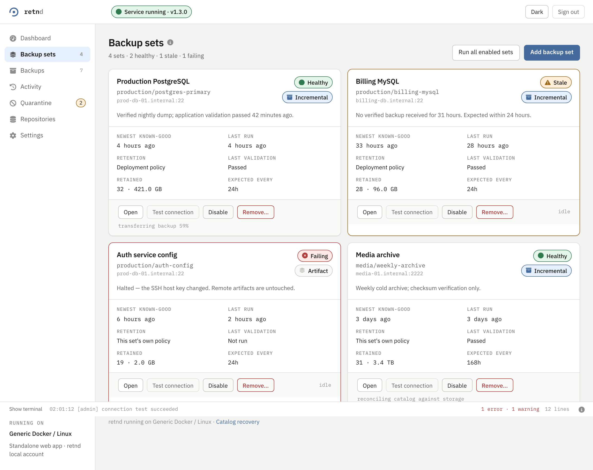
| On the card | Example | What it means |
|---|---|---|
| Health pill | Healthy / Stale / Failing | Stale is “no verified backup inside the expected interval”. Failing is an attempt that ended badly, including a halt. |
| Set id | production/postgres-primary | Source and set name. This is the id every command takes, and the first two thirds of an artifact id. |
| Newest known-good | 12 days ago | The last backup that verified. FR-19 protects this one from retention. |
| Retention | Deployment policy / This set’s own policy | Which chain governs it. A set with its own policy is not merged with the deployment's, it replaces it. |
| Retained | 32 · 421.0 GB | How many copies this set is keeping and what they cost. |
| Expected every | 24h | What makes it stale when it is exceeded. |
| Open | a button | Goes to the set's own screen: its artifacts, its retention card, its live activity. |
| Test connection | a button | Resolve, connect, check the host key, offer the key, authenticate, list the folder. Six named outcomes, and the same check retnd backup-set test-connection runs. |
| Disable | a button | Stops the scheduler running it. Keeps the configuration and every retained copy. |
| Remove… | a button | Configuration only. The backups it collected stay on storage and stay listed under Backups, and creating the set again with the same id takes them back. |
Backup set detail
| Control | What it does | What it costs |
|---|---|---|
| Run this backup set | Runs one pass over this set only. | A real transfer cycle. Unavailable while the set is disabled, because a sweep would not have visited it either. |
| Run all enabled sets | The same deployment-wide run the Dashboard and Backup sets list offer. | A cycle over every enabled set, not only this one — the label says so because this button sits on one set's own page. |
| Test connection | Resolve, connect, check the host key, authenticate, list the folder, and prove whether these credentials may write there. | Nothing is kept. The seven-step trace lands in the docked terminal, where a refusal is written too rather than silently swallowed. The seventh step creates one uniquely named probe file under the remote path and removes it again; both answers pass, because a read-only source is a posture rather than a fault, and what the answer decides is whether delete from source may be enabled at all. |
| Edit | Opens edit mode, one field at a time. | Nothing yet. Each field keeps its own Save, which writes that one field immediately rather than waiting for the rest of the form. |
| Save anyway / Leave it as it was | Answers a refusal a per-field save came back with (an unproven host key, a completion-method change mid-transfer). | Save anyway writes the same patch again over the refusal. Leave it as it was writes nothing and returns the field to what it was. |
| SAVE ALL & EXIT EDIT | Writes every field changed since Edit was pressed and returns to view mode. | One write per changed field. Anything not touched this session is left alone. |
| CANCEL & EXIT EDIT MODE | Leaves edit mode without saving what is still typed. | Nothing written. The confirmation lists exactly what would be discarded; a field a per-field Save already wrote earlier in the same session is not undone, because that write already happened. |
| Preview retention | What the current policy would delete for this set, as a reviewed plan. | Nothing. It is a preview, the same dialog the Backups screen opens. |
| Scrub now | Re-checks every copy of this set straight away, due or not, at the strongest class that costs nothing. POST /api/v1/backup-sets/{source}/{set}/scrub, or retnd scrub <source>/<set>. | Answers 202 with an operation id and carries on in the background, so leaving the page does not stop it. Only one scrub of a set runs at a time, and a set held for editing is skipped. A storage medium gets an existence check unless content is asked for, and an archive-class copy is never read. |
| Run recovery test | Recovers the newest known good copy to an isolated path, checks the digest, then runs the set's validator. A set that declares none gets the built-in structure check instead, which reads a gzip, zstd or tar file end to end inside the application and records Recovered, readable (reported as readable, never passed; the journal stores it as passed under the check identity retnd-builtin-structure). POST /api/v1/backup-sets/{source}/{set}/recovery-test. | Answers 202 with an operation id. A second request for the same thing while one runs coalesces: it gets 202 with the running operation's id, the validator runs once, and each request still gets its own receipt. |
| Operation detail | One scrub or recovery test on its own page, /assurance/operations/<operation-id>, running or long finished. retnd assurance show <operation-id>, or GET /api/v1/assurance/operations/{op}. | Nothing. It reads the durable activity record (30 days: a run's start, the last stage it reached and its end) and whatever the live feed still holds, and shows how the run ended with its stage count and bar where it really got to. A finished recovery test shows its validator output when that output is this run's. A run this engine is running answers at once, before it has written a line, and one with no end that nothing is running reads no end on record, which can mean it is going in another process. An id with nothing on record is said in words, after a short grace period. |
| Cancel | Stops a running scrub or recovery test. retnd assurance cancel <operation-id>, or POST /api/v1/assurance/operations/{op}/cancel. | The status is cancelling until the operation's own end line arrives. A cancelled recovery test ends with the result warn, not as a failed copy. |
| Run validation | The same recovery test as Run recovery test, started from the Validation pane further down the page. retnd recovery-test <source>/<set>. | The button reads in flight with the stage and progress, is disabled with the reason while a test is running for the set, and the pane’s recorded results (the built-in structure check or recovery test, and the content verification) update when the run ends, without a reload. |
| Show validator output | What the newest recovery test of this set printed. retnd recovery-test <source>/<set> --show-output, or GET /api/v1/backup-sets/{source}/{set}/recovery-test/output. | Kept: the newest test's output per set, at most 200 records, 1 KiB per record and 32 KiB in all, with a truncation record last when anything was cut and no control byte stored. Reading it runs no test. |
Pressing Edit on a set with a backup in flight stops it first and says so on screen: the confirmation reads “Stop it to edit this backup set?”, and the interrupted backup stays incomplete rather than counting as a finished one. The next cycle after edit mode closes picks it up again.
Snapshots
Only on a backup set running the incremental engine, reached from the set's own page. Every snapshot run this set has on record, newest first, with the phase it reached and the verification level a check actually achieved. Only a run at SUCCESS is a restore point.
Each row carries five separate measurements and no total: entries scanned, logical size, read from source, written to repository, and reused. A single “backed up” figure would report a 100 GB tree deduplicated down to 200 MB of new content as a 100 GB upload every night. A counter nobody took prints not measured and never 0, because “reused 0 bytes” sends somebody hunting a fault in a backup that is working. Row actions open the inspector, Restore, and the hold controls on Snapshot retention. The equivalent command is retnd snapshot list <source>/<set>.
Snapshot detail
One run in full: the five measurements as a metric strip, the repository domain it was stored in, the source-consistency mode that was in force when the pass ran rather than the one configured now, the verification level asked for beside the level achieved, and the transition log that says how the run reached the phase it is in. A failed verification carries no achieved level at all. retnd snapshot show <source>/<set> <run-id>.
Restore from a snapshot
Reads a restore point this deployment holds and writes a tree onto a disk it can reach. Which snapshot (the set's last known good by default), optionally one path inside it, the local directory to write into — required, and never invented, because an engine that chose the disk would fill it — and what to do when the destination already holds something: refuse (the default, which stops rather than replacing anything), skip, or overwrite. It submits one durable operation and then watches it.
restore command
retnd restore asks a storage provider to make an archived object readable again, over hours and at a cost, and writes nothing anywhere. This screen, and retnd snapshot restore, read a snapshot and write files. The two are never folded together.
Snapshot retention and holds
What snapshot retention would decide about each of this set's snapshots right now, oldest first, and it deletes nothing: KEEP names every tier that selected the snapshot, DELETE means nothing did and every safety check passed, and REFUSE means it was a delete candidate and something stopped it — the only one of the three that needs somebody to look at it. The same GFS chain that retains artifacts decides this; there is no second policy.
Place a hold stops retention deleting one snapshot until somebody releases it, and a reason is required: a hold nobody explained is one nobody dares release, which makes it permanent by accident. A hold names who placed it and why, and separately who released it and when. Release this hold deletes nothing — it returns the snapshot to whatever the policy already said about it. retnd snapshot retention, snapshot hold, snapshot holds, snapshot unhold.
Operation (a scrub or a recovery test)
The page a set's Operation detail link opens, at /assurance/operations/<id>: the live stage of one scrub or recovery test, the durable lines it has written so far, a Following toggle and Cancel. It is the same panel the set page mounts, so a reload shows the stage the set page showed. A deployment whose web client cannot start either (there is no api/v1 route that does) says Not available here instead, and the set page shows the equivalent retnd scrub command.
Backups
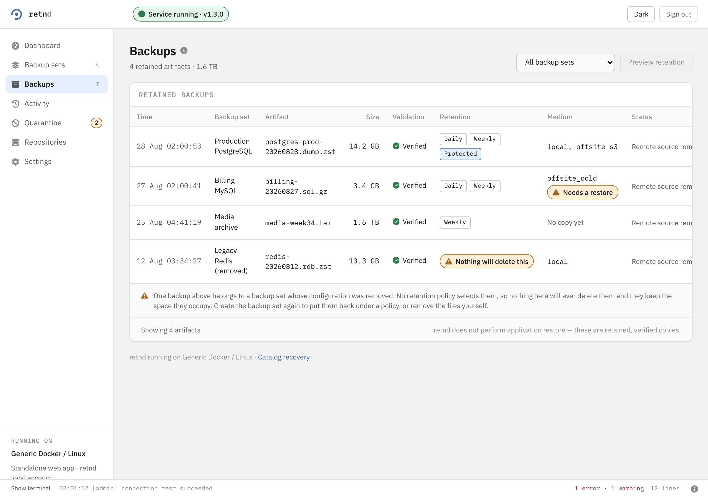
| Column | Example | What it means |
|---|---|---|
| Assurance | Stored, Content verified, Recovery tested | Three separate claims, each with its own age, and no single tick that stands for all of them. Stored says a copy is recorded. Content verified says the bytes were last read and matched the checksum recorded at ingestion, and when; a copy that was only checked for existence does not earn it. A bare Content verified is drawn only when every copy is content verified; when some copies are not, the chip says how many, as in Content verified · 1 of 3 copies, 2 never checked. Recovery tested says a copy was last recovered to an isolated path and passed the set's validator, and when; the chip reads Recovery test passed or Recovery test failed. A set with no validator that passed the built-in structure check reads Recovered, readable instead, which says the file decodes end to end and nothing about whether an application can use it. A claim nobody has checked says so instead of showing a mark. This column replaces the old Validation column, which drew a green Verified for the check made at ingestion and so looked like the second claim without saying anything about whether the bytes are still good. A backup whose ingestion validation failed shows Failed validation under its name. |
| Retention | Daily, Weekly, Protected | Which tiers keep this copy. Protected is FR-19's newest known-good, which no tier may delete. |
| Nothing will delete this | a warning chip | The set's configuration was removed, so no policy selects the copy. It occupies space for ever until the set is recreated or the file is removed by hand. |
| Medium | local, offsite_s3 | Where the copies are. No copy yet means the tier that should hold one has not moved it. |
| Needs a restore | a warning chip | The copy is in an archival storage class and cannot be read until the provider is asked to make it readable. That is retnd restore, it is billed, and it takes hours. |
| Preview retention | a button | What the current policy would delete, as a reviewed plan, before anything is deleted. |
Each row opens that artifact's own detail page.
This product recovers and exports the retained artifact; restoring it into an application remains the operator’s responsibility. The footer of the table says exactly that sentence, and putting a copy back into a database or a VM is yours to do. The first half is the Recover artifact action on a row, which checks the bytes against the recorded digest before it hands them over and offers three targets: a download in this browser, a path under the host’s staging root, or another configured destination. It sits beside three separate claims, Stored, Content verified and Recovery tested, each with its own age and never rolled into one tick. Which of the three restore-shaped commands to use is a table of its own.
Backup detail
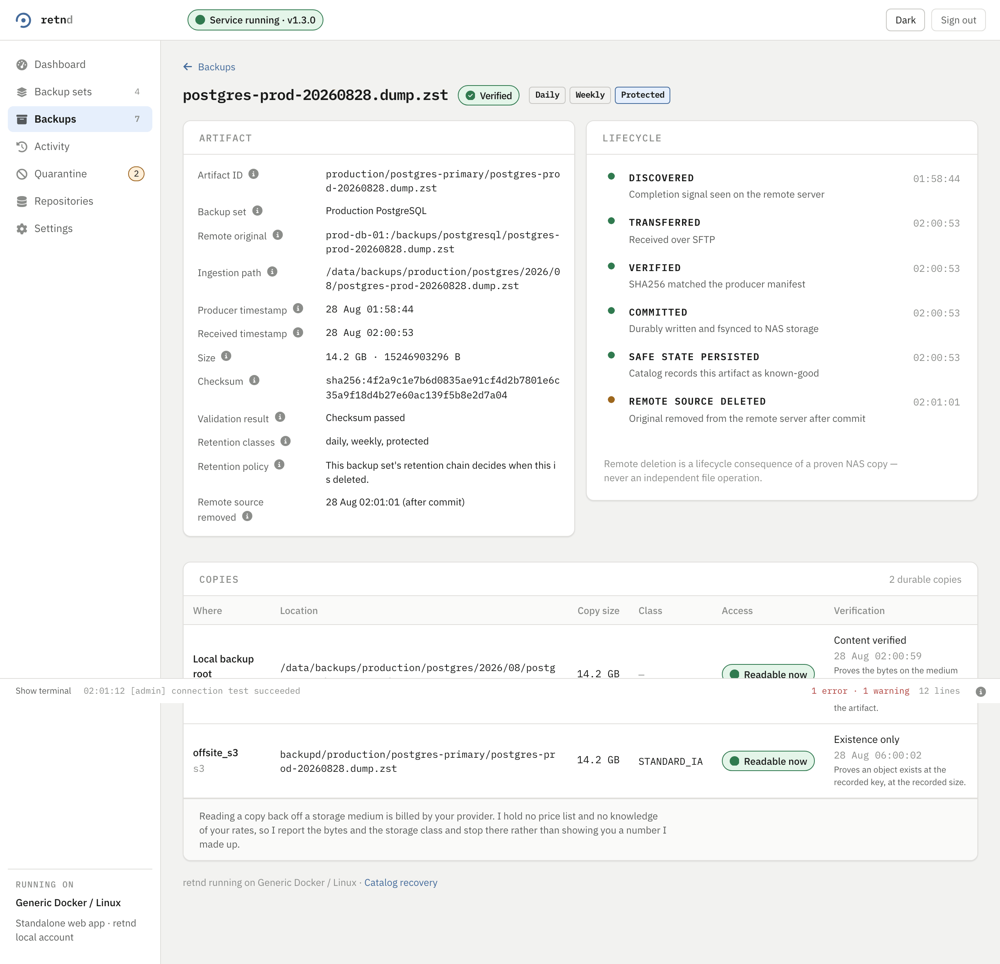
Two cards and a list, and no button among them. Artifact is the recorded facts: id, remote original path, the ingestion path (a path on disk, not proof a readable file is sitting there), producer and received timestamps, size, checksum, and which retention classes selected it. Lifecycle is the same timeline the dashboard's live view feeds, at rest: discovered, transferred, verified, committed, remote source removed. Below both, the copies list names where the bytes actually are, one row per storage medium, each with its own verification class and whether reading it back needs a restore first.
This screen answers “is this backup safe, and where is it”, and every one of those answers is something the engine already decided, so reading it changes nothing. Getting the bytes out is a separate, deliberate action, Recover artifact on the list, because it is the one that moves retained data out of the deployment and it asks first. This product recovers and exports the retained artifact; restoring it into an application remains the operator’s responsibility.
A download ends in one of three ways, and the activity feed records which. Completed (recovery verified) means the ranges served added up to the whole artifact and its digest matched. Interrupted at N of M (recovery interrupted) means something other than a bad byte stopped it, most often the browser going away: N is the offset a resume starts from and M the artifact’s size. Failed verification (recovery failed verification) means a piece or the whole did not match the recorded digest, and the copy is damaged. On the page the badges read Completed, Interrupted at N of M bytes and Failed verification, and none of them is drawn as a success. Completed is neutral because it means bytes were sent and matched the digest, not that the browser kept the file.
Operation
Reached from Operation detail on a running scrub or recovery test, at /assurance/operations/{op}. It is the same panel the backup set page shows, on a page of its own: the live stage, the durable lines, a Following toggle that keeps the list scrolled to the newest line, and Cancel. Cancel is a request: the run reads Cancelling until its own end line arrives, and a run that stops early records no result, so the claims keep their previous answer. A recovery test's lines can be opened here as long as they are still on the live feed; a scrub is never on that feed, so only the page that started it can follow it. A server that does not offer these operations says Not available instead.
Workflow run
Reached from the Workflow panel on a backup set, at /workflow-runs/{run}. One run of the hook lifecycle wrapped around one backup: all five stages in execution order, including the ones that had no directory to run, because “the global after stage did not run” and “this deployment has no global after directory” are opposite facts when a database has been left quiesced.
Three statuses, side by side, none derived from the others — backup, workflow and cleanup — since “the backup succeeded and the cleanup did not” means a machine may still be sitting quiesced with a good backup beside it. A failed workflow names the script that ended it. A run whose hooks were bypassed reports its workflow status as skipped and says so, rather than showing a verdict for scripts nothing executed. Each step carries a read-only terminal of exactly what that hook printed, streamed by cursor while the run is live. A step killed on its timeout whose exit was never confirmed is called out at the top of the page, because the consequence is a process that may still be running on a machine this product cannot reach. The equivalent commands are retnd workflow run show, workflow run steps and workflow run log --step.
A run left needing recovery keeps the set refused and offers exactly the two ways out the API has: resume the cleanup from that run's own retained spool, or acknowledge it in words that are recorded. There is no dismiss.
This page enumerates the screen. What the five stages mean, what a .local.sh hook is for, which credential a .remote.sh hook needs, how the environment is built and what the six BSH rules refuse a save over are on the scripted workflows guide, with clips of each of these surfaces in motion.
Activity
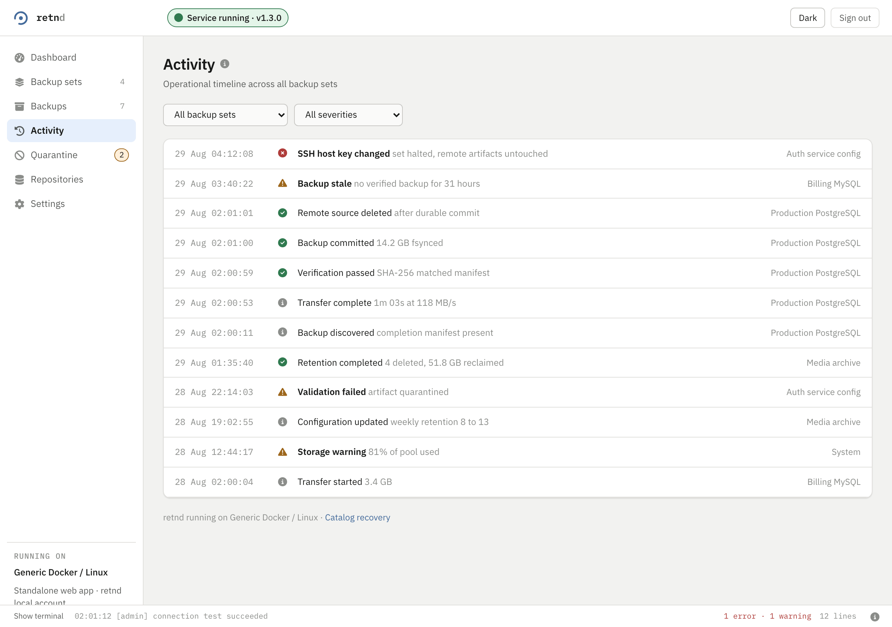
Each row is one recorded lifecycle transition: discovered, transferred, verified, committed, remote deleted, retention completed, host key changed, storage warning, configuration updated. The severity icon is the thing to scan: an error is a halt or a failure, a warning is a state that will become one, and information is the pipeline doing its job.
This is the same feed retnd activity prints, and it is durable: it survives a restart, which is what separates it from the docked terminal below.
Quarantine
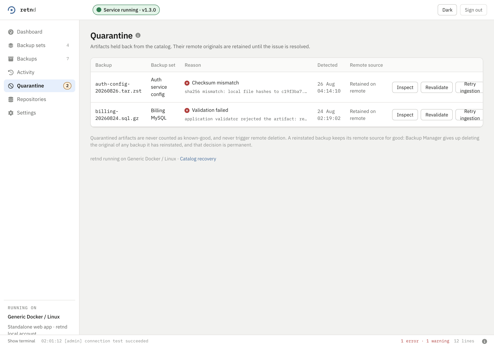
| Control | What it does | What it costs |
|---|---|---|
| Inspect | The full recorded reason, including the hashes that disagreed. | Nothing. It reads. |
| Revalidate | Re-runs the checks against the copy that is already here. | Nothing moves. If it passes, the artifact leaves quarantine. |
| Retry ingestion | Puts the artifact back into the pipeline at DISCOVERED, so it is fetched again. | A re-transfer. |
| Reinstate | Trust the copy as it is. | Permanent: the remote original is never deleted for that artifact afterwards, and that decision cannot be taken back. |
Settings
config.yaml outside the wizard.| Card | What it sets | What to know |
|---|---|---|
| Storage capacity | A cap, a warning threshold and a critical threshold | A cap of 0 means no cap, and the dashboard reports against the disk instead. Any other value is enforced: a transfer that would push past it is refused before it starts, rather than half way through. |
| Retention policy | The timezone, the week start, and the tier chain | Each tier is a name, a granularity, how many to keep, an optional window unit, and the destination its copies go to. Removing every tier is not how retention is switched off: an empty chain reinstates the default daily/weekly/monthly one. |
| Protect the newest known-good | A checkbox | FR-19. With it on, no tier may delete the newest verified backup of a set. |
| Storage destinations | Where copies can go | Every destination is an instance of a registered backend, so there can be more than one of any of them — two local volumes and two buckets is an ordinary list. It has a section of its own below, because five of its controls change configuration and each one costs something different. |
| Notifications | Where alerts go | Native NAS notifications where the platform has them, webhooks where it does not. The card says which of the two this deployment got. |
| Administrator password | The local account's password | Current, new, confirm. This account is not the NAS login and never was. This is rotation, not recovery: a password nobody knows is reset from Forgot password? on the sign-in page, which mails a single-use link to the address in the card below. |
| Account recovery | The recovery email address, and the SMTP server the account's own mail is submitted through | SMTP host, Port, Security (STARTTLS, TLS or none), SMTP username, SMTP password, From address and Administrator password. The SMTP password is write-only: the card reports that one is stored rather than what it is, and Save recovery settings with that field left blank keeps the stored one. Saving asks for the administrator's own password, because whoever controls the recovery address and the mail server controls where a password reset link is delivered, so a signed-in browser alone is not enough to repoint either. Send test email proves the path without changing anything and asks for nothing, since it changes nothing. Changing the address — or the mail server — sends a fresh message over the endpoint being saved and refuses the whole save if it cannot be delivered, rather than trusting what was typed. |
| Catalog recovery | A link to the screen below | It appears here because it is the only destructive-sounding thing that is not destructive. |
| Platform | What the deployment thinks it is | The integration, the authentication source, the deployment shape, and which capabilities the platform grants. Check here first when a NAS feature is missing. |
| System information | Versions | Service version, API contract, backup engine, Go toolchain, configuration revision, platform adapter, build commit. |
Under every retention tier and every destination, this screen prints the retnd command that does what the control above it does: retnd settings patch --tier-medium monthly=offsite_s3, retnd medium test-connection offsite_s3, retnd medium remove offsite_s3. They are there to be copied, and they are the reason the two surfaces cannot drift: the button and the command are the same call.
Backup defaults
Reached from Settings. What a new backup set starts with — engine, repository domain, source-consistency mode, verification level and sample size, the two verification cadences, poll interval — so a fleet is not configured one wizard at a time. These are the answers Add backup set opens with; they are defaults for the next set and change nothing about a set that already exists.
It also lists who maintains each repository domain. Ownership is shown and not transferable from here: there is no API route that moves maintenance ownership in this build, and the card says so rather than offering a control that would fail.
Repository domains
A repository domain is a security boundary, not a folder: one encrypted store, one passphrase, one deduplication span, one maintenance owner, one corruption fate. A backup set running the incremental engine names exactly one, and two sets sharing a domain share all six of those things — which is where the storage saving comes from, and why the choice is never defaulted.
This screen lists every domain the configuration declares, whether it is shared or isolated, which backup sets store snapshots in it, and its health. retnd repository health is the same answer at a terminal.
Define a repository domain
The form that declares one. POST /repositories persists the domain — its id, its description, its sharing rule and a REFERENCE to the passphrase that opens it — into config.yaml, atomically, and the deployment hot-reloads, so the domain is nameable by a backup set immediately and without a restart. retnd repository create <domain> --isolation shared|isolated --passphrase-file F is the same write from a terminal, and it is the surface that also takes --passphrase-command, which is a program and its arguments rather than a single box.
Declaring is not creating. What is written is the declaration; the encrypted store itself is created by the first backup run that stores a snapshot in the domain, which is the lifecycle a domain named on the Add backup set wizard's repository step already had. So the create opens no storage and resolves no passphrase — the passphrase box takes a path or a variable name, and the secret never travels over this API — and the new domain shows on the fleet list as answering but holding no repository yet, rather than as a green row nobody measured. A deployment that does not run the incremental engine refuses the write with INCREMENTAL_ENGINE_DISABLED, and the screen prints that refusal's own sentence, which names the configuration key that answers it.
The sharing choice is the decision the screen exists for: picking Shared or Isolated states what each answer commits every set in the domain to, and the request always names one, because the API refuses a declaration that does not. Stating it here rather than in a help page is deliberate — co-tenancy is named where the decision is made. The maintenance-ownership answer is a gate on this one write and records nothing: this instance
is refused if a maintenance record already names somebody else, and ownership itself still moves only by transfer (ADR 0017).
Repository health
Each domain's own verdict, which is a different question from any backup set's: a set can be perfectly fresh while the repository holding its snapshots is unwritable, out of maintenance, or reached by a process whose clock has drifted far enough to mis-order manifests. Every probe is reported separately rather than reduced to one boolean, because the remedies are different — unreachable is a mount, unwritable is a permission, invalid credentials is a passphrase, and overdue maintenance is a schedule.
The verdict uses the same three words a backup set uses, so one dashboard carries one severity scale. FAILING is reserved for a repository that cannot take a backup at all; overdue maintenance, a drifted clock and a failed verification are DEGRADED. Clock skew is signed, and the sign is the message: behind the history already stored is the direction that dates a new snapshot before an older one. retnd repository health prints the same rows and exits non-zero when any repository is failing.
Repository maintenance
Compaction and reclamation, per domain. Retention deleting a snapshot frees nothing on its own — the content behind the manifest stays in the store's packs until maintenance collects it — and full maintenance is what actually reclaims storage, so a domain with recent quick runs and no full run is growing.
Ownership is a first-class column, because exactly one instance may maintain a domain: two processes rewriting one store's indexes concurrently is how a repository loses content it still references. A domain another instance owns has its actions disabled with the reason in the card, since “press it and find out” is how that happens. retnd repository maintenance <domain> answers the same question at a terminal, and opens nothing, so it still answers while the repository itself is unreachable.
Storage destinations
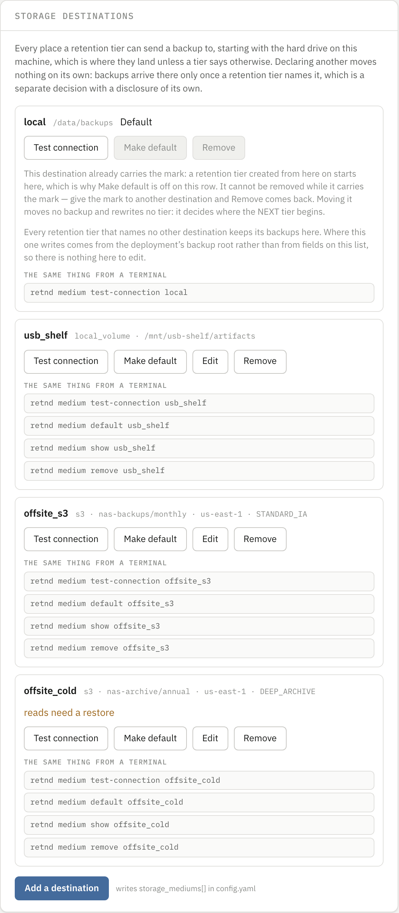
A backend is described by a manifest the build carries — data, not code — and the manifest is what decides which fields a destination has, and which steps its connection test runs. Two are registered: local_volume, a directory on a disk this machine can see, and s3, a bucket on Amazon's service or anything that speaks its API. The drive backups already land on is an instance too, called local, and the only thing still special about it is that its location comes from the deployment's backup root rather than from a field, so it has no Edit.
Declaring a destination moves nothing. Backups arrive somewhere only once a retention tier names it, which is the card above this one and a separate decision with its own disclosure.
| Control | What it does | What it costs |
|---|---|---|
| Test connection | Runs the probe this destination's manifest declares, one step at a time, and reports every step. | A real object written to the destination, read back, and deleted. Reachable is not the same as writable, which is why it is not a ping. Nothing is saved by checking; a destination that refuses is left exactly as unproven as it already was. A pass against a destination carrying never proven clears that mark, and it is the only thing that does. |
| Make default | Hands the Default mark to this destination. | Two things, from one click, and the confirmation says both: this destination becomes the one a newly created tier starts on and stops being removable; the destination that held the mark becomes removable. Nothing already written moves — no tier is rewritten and no copy is relocated — so the second half is the half nobody clicked for, and it is the one that makes a destination deletable. |
| Edit | Opens the destination editor, which asks for a region, a bucket, a key namespace, a storage class, how a copy is proven, and a credential. | Nothing until it saves, and it will not save what it has not proven. Those are a bucket's fields and not a manifest's, which matters on a destination that is not a bucket — see below. Absent, not dimmed, on local: there is no state an operator can reach that would give that destination fields to edit. |
| Remove | Deletes the declaration. | Configuration only: not one stored copy is deleted. It is refused while any copy names this destination, and the refusal names how many and which backup sets, because removing the declaration would leave the deployment with no endpoint and no credential to reach those copies with — they would read as unreachable and no retention pass could ever run against them again. |
| Add a destination | Opens the three-step wizard below. | Nothing. The wizard writes storage_mediums[] in config.yaml eventually, and says so beside the button, but not from any of its own three steps. |
Three chips appear beside a destination's name, and each is a claim about a different thing. Default is where a newly created tier starts. reads need a restore is an archival storage class: a copy here cannot be read until the provider is asked to thaw it, which is billed and takes hours. never proven is a destination declared with the check skipped — --no-verify on the command line — so nothing has yet shown that its credential is accepted or that an object written there can be read back.
The destination holding the Default mark keeps both Make default and Remove, disabled, each with the sentence saying why and what lifts it. That pairing is deliberate: the destination an operator cannot remove is the one whose row would otherwise offer neither the removal nor the way to earn it, and the control that earns it sits on every other row. A destination marked never proven has Make default off for a second reason — every tier that follows the default would start somewhere nobody has checked — and a refusal is worth more before the click than after it.
Edit predates the manifest and has not been moved onto it. It asks a bucket's questions whatever the destination is, it offers no directory field, and it submits the destination as an s3 one — so on an instance of local_volume it is the wrong form, and saving through it would name a backend the destination is not. The manifest-driven form is reached by adding a destination and by nothing else. A local volume that needs a different directory is worth declaring again under a new name rather than edited here: nothing already stored moves either way, and Remove on the old declaration deletes no copy.
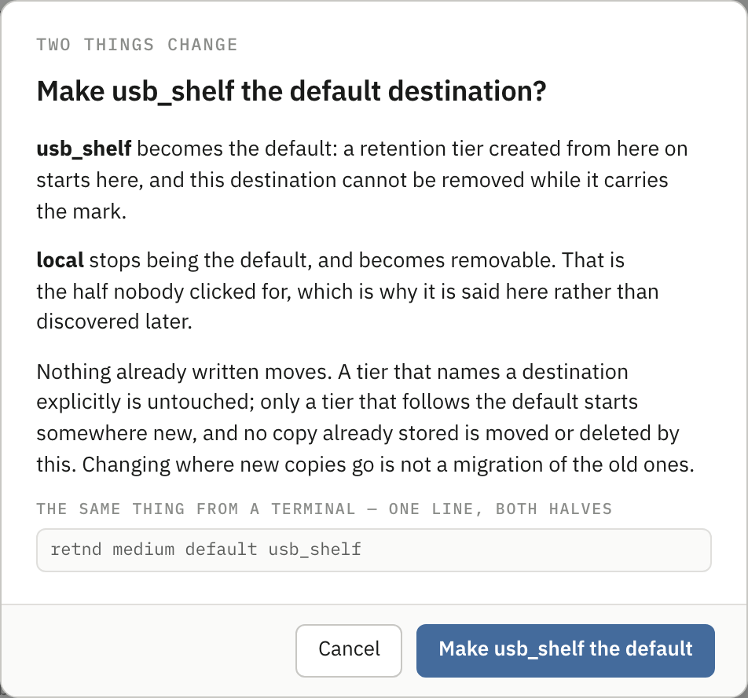
Adding a destination
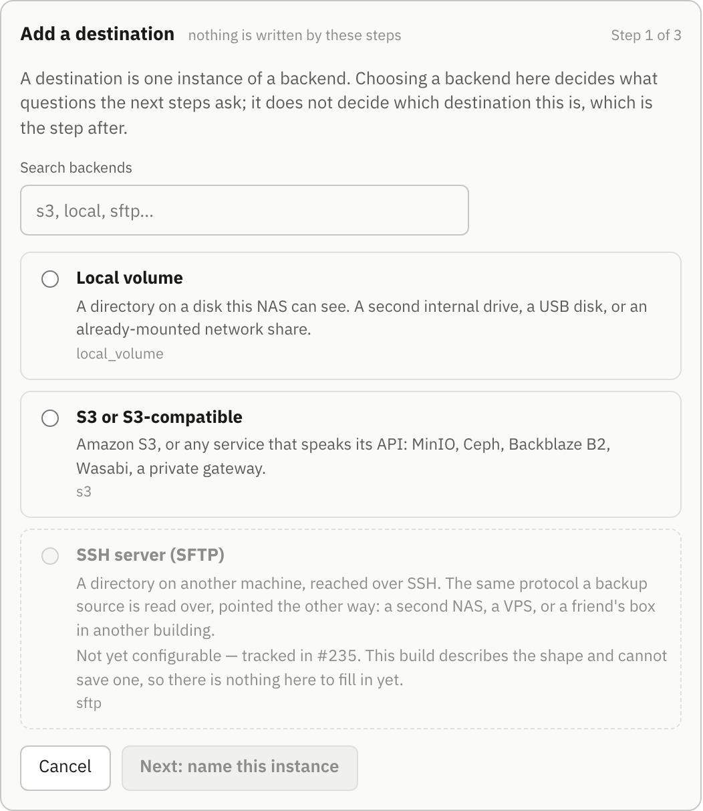
GET /api/v1/backends; there is no list of backend names in the page.Choosing and naming are two steps rather than one, and that will look like ceremony in a release that registers two backends. It is the shape the rest of this holds up: several instances of one backend is the normal case, and a single screen that collapses “pick S3” and “call it cold_archive” into one act has quietly said again that a destination is a backend type.
| Step | What it asks | What it costs |
|---|---|---|
| 1. Choose a backend | Which registered backend this destination is an instance of, searchable by id, label, summary or rclone backend. | Nothing. Backends this build understands and no manifest describes are drawn and cannot be chosen: they carry no radio and say so in place. Listing them is a real answer to somebody who came looking for SFTP, which a menu that never mentions it is not. |
| 2. Name this instance | What this destination is called. The step lists the instances of the chosen backend that already exist. | Nothing, and the name is the one thing here that cannot be changed later: a retention tier refers to a destination by it, and every stored copy records it as where it lives. The pattern and the reserved id come from the same response as the backend list, so this form refuses exactly what a hand-edited configuration file would be refused for. |
| 3. Confirm | Nothing. It states the backend, the name, that no values have been asked for yet, and which fields the next step will ask for. | Nothing, and it says so: Next: configure it hands off to the configure wizard and writes no configuration on the way. |
None of these three steps writes anything, and the confirm step says as much. The destination is written once, by the configure step that follows, and only after a connection test against it has passed. That is not a shortcut: a destination carrying no values is refused by the configuration schema itself, so a half-created one is not representable in config.yaml at all — and the consequence an operator can use is that no retention tier can ever be pointed at a destination nobody has proved.
Configuring a destination
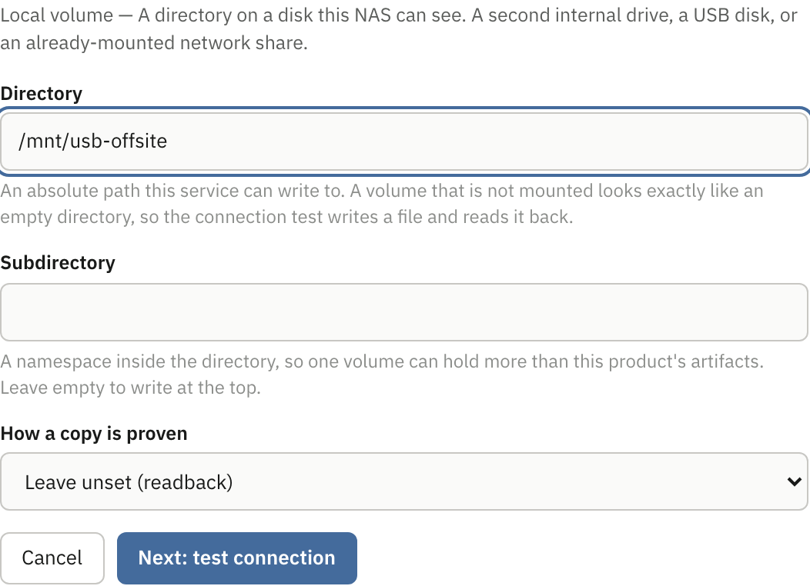
Three steps: fill in what the manifest declares, prove it, then look at what is about to be written. The order is the point — what gets written is what was proven — and it is enforced rather than advised: editing any field makes an earlier pass stale, the screen says so where the edit was made, and Save configuration is out of reach until a check against the values now on screen has passed.
| Field kind | What it renders | What to know |
|---|---|---|
string | A text box. | A manifest may pin a pattern to it, and the refusal names the field rather than quoting what was typed. |
path | A text box for an absolute path on this machine. | A volume that is not mounted looks exactly like an empty directory, which is why the connection test writes a file and reads it back rather than checking the directory is there. |
url | A text box for an endpoint. | Deliberately not the browser's own URL field: that accepts any scheme, and a field the browser waves through and the manifest refuses is two definitions of a legal endpoint with the one nobody wrote deciding. |
enum | A dropdown of the declared choices. | An optional one opens on Leave unset and names what unset will be read as. It stays unset: choosing the default on the operator's behalf would freeze a value this product resolves at read time into their configuration file. |
bool | A checkbox. | — |
key_prefix | A text box for a namespace inside the bucket or directory. | So one bucket or one volume can hold more than this product's artifacts. Empty writes at the top. |
credential | An access key id, readable, and a secret in a masked field. | Typed once, exchanged immediately for an opaque reference, and dropped from the page before anything else is sent. It is never read back: nothing reports a destination's credential, not even which kind it is, so the field is empty when an operator returns to a destination that has one — and the review step says stored, and never shown again rather than showing anything. Changing a region does not mean re-entering a key; leaving the pair empty keeps the credential already stored. |
![The configure wizard's test step: a paragraph saying a real object is written and read back and removed and that reachable is not the same as writable, a round trip figure of 0.7s, then nine rows. credentials skipped with the manifest's reason that a local destination reads no credential, reach passed naming the directory, deliverable passed, write passed, read_back passed, storage_class skipped with the manifest's reason that a filesystem has no storage classes, verification passed, delete passed, and space passed reporting 1.4 TB available. Below them the equivalent retnd medium test-connection command and Back, Test connection again and Next: review](screens/ref-14-probe-steps.png)
Eight steps are a closed vocabulary the engine and the manifests share, and a manifest declares for each one whether this backend runs it and, when it does not, the sentence saying why. So the skipped rows and their reasons are on screen from the start: an operator learns that a local volume reads no credential rather than wondering why nothing checked their key. The drive on this machine and a declared local volume both add a ninth answer, space, which is the one failure a bucket cannot have.
| Step | What it proves |
|---|---|
credentials | The credential this destination declares can be obtained at all, which is a question about this host. Skipped for a local volume, which reads none. |
reach | The endpoint answers and holds the bucket with that credential — or, for a local volume, that the directory is there and is a directory. |
deliverable | An artifact can be delivered to this destination's storage class at all. An archive class cannot take delivery, and is refused before anything is written, because a probe object there is billed for a minimum measured in months. |
space | The filesystem has room, measured against this deployment's own safety margin. Local destinations only: a bucket has no filesystem to fill. |
write, read_back, delete | A real object written, read back byte for byte, and removed again. Read access is not what a move needs, a write nobody can read is not a backup, and a destination this manager can write to and not delete from is one no retention pass could ever clean up. |
storage_class | The object landed in the class the configuration asked for, rather than one the provider substituted. Skipped for a local volume, which has no classes. |
verification | The way this destination claims a copy is proven can actually be achieved here. Declaring a digest the endpoint cannot produce is a class that can never be met, so every move would refuse after the upload rather than fall back to a weaker check. |
A step after a failing one is not tried, and the list says that rather than drawing it as a pass or leaving it blank. Every sentence beside a row is the engine's own; none of them carries the text of what actually came back, because that names a path on the host or the name of an environment variable, and the classified cause goes to this manager's log instead.
The review step is the last of the three: what is about to be written, whether it was proven, and a checkbox offering to make this the destination new tiers start on. The offer is never taken as a side effect of saving — it is a second call, after the save — and the consequence is written beside it, naming the destination that stops being the default and therefore becomes removable. It is not offered at all to a destination that already holds the mark.
Catalog recovery
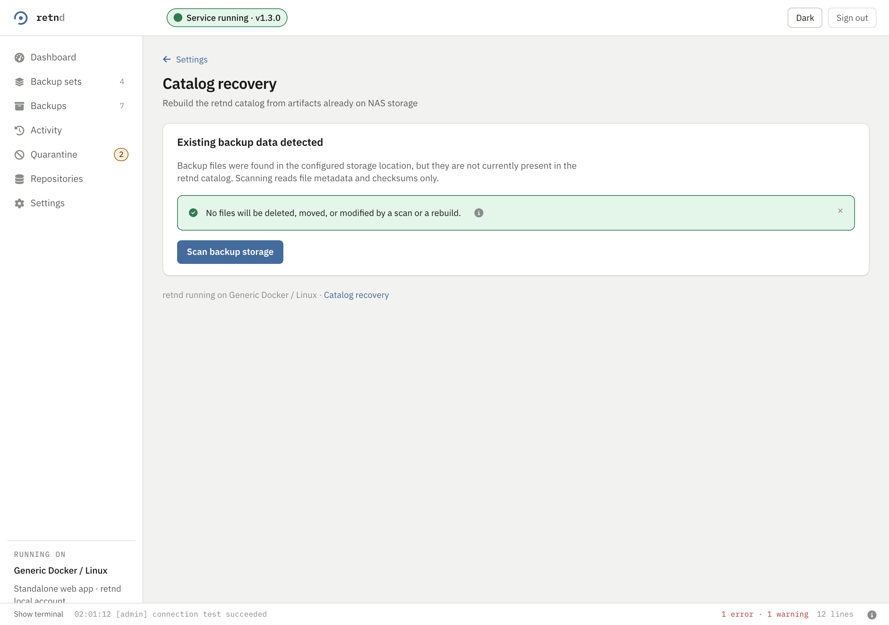
Every backup this manager commits gets a sidecar recovery manifest written beside it, and this screen is what those are for. Scan backup storage reads file metadata and checksums, reports how many artifacts it found and how many need review, and writes nothing. Artifacts it cannot make sense of go to Quarantine, not to a delete. The command line spells it retnd catalog rebuild, and --dry-run is the same read-only pass.
The docked terminal
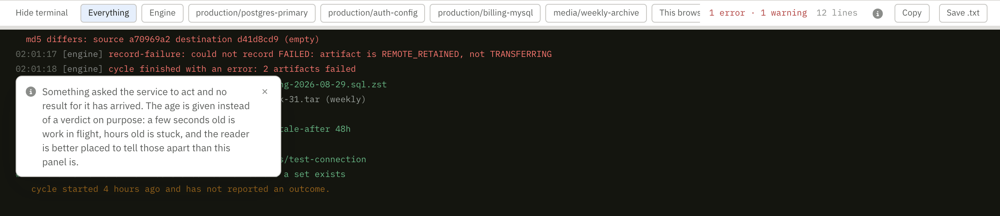
Two feeds in one panel, and the chips choose between them. Engine and the per-set chips are the serving process's own live output. This browser is what you have done in this tab, including the retnd command each action was equivalent to: the $ retnd backup-set patch production/auth-config --stale-after 48h line in the picture is the echo of somebody editing a set in the interface a moment earlier.
The engine's lines are kept, not just shown: they are also written to the state database, so after the serving process restarts the panel fills back up from what the last process recorded, and a rule marks the restart. The database keeps 30 days and at most 50,000 lines; progress numbers that are only true for an instant, and the per-range lines of a download, are not kept. This browser lines are still only this tab's. For the lifecycle history of each backup, read Activity. Copy and Save .txt take what is on screen, filter and all.
The command line
The engine and the command line are two binaries in one image. retnd-web serves the API and the interface; retnd is what an operator types. Almost everything the interface does is here, and several things it does not: retention previews with per-run overrides, artifact-level validation with a full re-download, catalog rebuilds, and the storage-destination verbs. The exception runs the other way and is named under medium below: a destination on a local volume can be declared from the browser and not from here.
On the standard deployment it is reached through the engine container:
docker compose exec retnd /retnd statusOn a CLI-only install the installer writes a wrapper and you type ~/retnd/bin/retnd status instead. Every command except version takes --config, which defaults to /etc/retnd/config/config.yaml and also accepts the directory, because that is what packaging mounts.
Every command
Thirty of them. This table is checked against the binary's own dispatch table on every run of the repository's gate, so a command that is added, removed or renamed and not reflected here fails the build rather than going quietly stale.
| Command | What it does | |
|---|---|---|
run | Perform one processing cycle and exit. | |
daemon | Repeat the cycle at poll_interval. One engine per deployment: it is refused rather than started if another process is already serving that state database. | |
check | Validate the configuration and the state database, then exit. | |
status | Report process and backup-set health, exiting non-zero unless every set is healthy. A set the manager could not connect to (HOST_KEY_CHANGED, AUTHENTICATION_FAILED or KEY_PERMISSIONS) prints a halted: line under it with when it was last refused and the command that fixes it. --json prints the object GET /api/v1/system/health returns, plus a process key, and keeps the exit status. On a fresh install with RETND_API_URL set it also prints the engine’s first-run steps, attributed to the engine, and is exactly what it was without that variable. | |
sources | List the configured sources and their backup sets. sources --json prints ListBackupSetsResponse, every field of every set, which is what GET /api/v1/backup-sets returns, where the text form prints six columns. | |
backup-set | The configuration verbs for one set: create, patch, show, remove, test-connection, retention, edit-hold, plus the two toggles enabled <on|off> and read-only <on|off>, which change after creation what --disabled and --read-only can only say at it. backup-set show <source/backup-set> prints one set whole (its key, trusted host keys, whether the connection was ever proven, its own poll interval and the one in force, engine, lineage key, repository domain, verification budget and mount prefix), and --json prints the BackupSet object GET /api/v1/backup-sets/{source}/{set} returns. patch --poll-interval D gives a set its own poll interval and 0 returns it to the deployment’s. create --uuid U declares an incremental set under an existing lineage key, so re-declaring a set after its configuration was lost finds its old snapshots instead of starting a second lineage beside them; without it one is minted and printed. create --source-mount-prefix P names the part of --remote-path that is how this deployment reaches the source, so moving a bind mount does not fork the lineage. A create takes --port for a non-default SSH port and --acknowledge-repoint when it re-declares a set over data already on record, and a first create names its journal with --state-database. Beside an engine still serving its first-run setup flow, that first create goes to the engine as POST /api/v1/system/first-run, the request the setup wizard sends, when RETND_API_URL and the two credential variables say where it is, so a headless install can finish its first run from a shell; beside an engine that is already configured it is refused and nothing is sent. A create or patch proves the connection before it writes anything, and --no-verify writes it anyway and leaves the set marked unverified until a test passes. read-only on is never refused; read-only off is refused when the source itself was proven unwritable. backup-set assurance <source/backup-set> shows one set's resolved assurance policy and whether it is the set's own, patches it with --scrub-cadence, --scrub-strategy, --recovery-test-mode, --recovery-test-cadence, --recovery-test-validator and --recovery-test-builtin-check, or --resets it to follow the deployment's policy. Beside a serving engine these writes go to it, as PATCH and DELETE /api/v1/backup-sets/{source}/{set}/assurance. The host-scoped settings are refused by name, because the per-set answer to each is no. backup-set retention <source/backup-set> reports the policy a set is retained under; with a policy flag it gives the set a whole policy of its own and with --inherit it takes that policy off again. Both writes, and backup-set workflow patch and backup-set workflow env set|unset, are handed to a serving engine when RETND_API_URL names it (PUT and DELETE /api/v1/backup-sets/{source}/{set}/retention, PATCH .../workflow, PUT and DELETE .../workflow/environment/{name}), and --json on the workflow writes prints the object the API returns for the same call. test-connection --json prints the TestConnectionResponse the API returns and keeps the exit status; retention --json prints the BackupSetRetention object for a read, with override present and null for a set that inherits, and a retention write refuses --json rather than accepting and ignoring it (it answers in text). | |
artifacts | List journal artifacts, filtered by source, set and --state, or print one artifact's full detail including the reason recorded for a failure. For each copy that has a record the detail also prints what its scrubs and recovery tests found: assurance_state, last_checked_at, last_failure_at, last_failure_reason, consecutive_failures, recovery_state (readable for a built-in structure pass), recovery_tested_at, recovery_failure_reason and recovery_check; a copy nobody has checked prints none of them. --json prints the API's own Artifact object for one backup and ListArtifactsResponse for the list. A list comes in configuration order: sources and their backup sets as config.yaml lists them, each set's backups in the order the journal recorded them, then the backups of sets that were removed from the configuration. The Backups page pages over that same order, so its page two is the same rows every time. The terminal prints the whole list; paging is the web page's alone until the list endpoint pages for real. Whether a set follows the deployment's assurance policy or has its own, which the Recovery chip calls Default configuration or Custom configuration, is backup-set assurance <source/backup-set> (is_override in its --json). --count prints how many backups the deployment holds outside quarantine, the number the web console's Backups badge reads and GET /api/v1/system/health serves as retained_count: every backup the list holds except the QUARANTINED and QUARANTINED_LOST ones, the backups of removed sets included. It is always the exact number (the sidebar shows >100 past a hundred), --source and --backup-set narrow it, --state counts that state instead, and with --json it prints {"count": N}. | |
activity | List recorded lifecycle events, newest first. --follow streams the live feed instead, which is a different feed rather than a mode of the same one, so it needs a route to the serving process and refuses without one. --before CURSOR reads the page behind a cursor: --json prints next_cursor when a page was full, and a text page names it on standard error, so a script walks the log a page at a time. A cursor that is not a row id is refused, and a filtered page cut by --limit has no cursor and says why. | |
storage | The capacity reading status does not print: this manager's own consumption against the volume it writes to, the cap if one is set and whether the gauge is drawn against the cap or the whole disk (denominator), the headroom before the next transfer is refused and which constraint binds it, then each backup set's level. The text uses the API's own field names, and --json prints GET /api/v1/system/storage. It exits 0 whenever the reading was taken, whatever level it found; status is the verb that exits non-zero. | |
fetch | Run one backup set's cycle on demand. | |
retention | Preview retention decisions for the deployment or for one set, with per-run policy overrides that apply to the preview only. retention apply is the one that deletes, against a plan it prints first, and it requires --acknowledge. retention <source/backup-set> --json prints that set’s plan as GET /api/v1/backup-sets/{source}/{set}/retention/preview serves it, plan_id included (minted by this process, so it applies here); it takes no what-if flag. | |
reconcile | Reconcile the journal against what is actually on disk, for every backup set. | |
validate | Re-check one artifact's durable copy wherever it is. --content downloads a copy from a storage medium and re-hashes it, which costs egress, so it is asked for rather than assumed. validate workflow <source/set> is the other subject: everything this product can establish about a backup set's hooks without running one, and it prints per script whether the bytes are a shell program — parsed in this process, so the verdict arrives even when no runner or source host is reachable — followed by any findings this product's own shell rules reported, each with its BSH code, its line:col and what to write instead. Those are retnd's rules and not ShellCheck's. A parse error or an error-severity finding also REFUSES a workflow save, on the API and on settings workflow patch and backup-set workflow patch alike; warning, info and style are reported and never block. Nothing executes a hook body. | |
scrub | Check the durable copies of what you name now, or every copy that is due when you name nothing: scrub [<source/backup-set> | <source/backup-set/artifact>]. Naming a set, an artifact or (with --medium, which needs an artifact) one copy means “now”, so it checks whether or not the copy is due. A copy on a storage medium gets an existence check unless --content says otherwise, and --content downloads and re-hashes it, which costs egress, so it is refused without --allow-egress. An archive-class copy is never read. Every result prints the class that ran, and an existence check is never called verification. It exits 1 when any copy failed, could not be checked, was skipped or was refused for cost. | |
catalog | catalog rebuild reconstructs a lost or corrupted state database from the sidecar recovery manifests. --json prints the CatalogReportResponse the API returns for the whole deployment, and a manifest that could not be used still exits 1. | |
quarantine | quarantine list [--backup-set source/backup-set] [--json] lists what is held, with the reason, whether it is irrecoverable and when it last changed; it is GET /api/v1/quarantine, which --json prints. The other three act on one quarantined artifact: revalidate re-checks it, retry re-enters it at DISCOVERED, reinstate trusts it in place and permanently forfeits deleting its remote original. | |
retry | Put one FAILED artifact back into the pipeline. Failed is not quarantined, so it is its own verb, and nothing does it automatically. | |
unconfigured | List the backup sets the journal remembers and the configuration no longer names, and what they still occupy. unconfigured clear ends those rows and removes the .partial residue a removal stranded, never a retained backup. | |
medium | The storage-destination verbs: list, show, add, edit, remove, default, test-connection (also spelled preflight), import-credentials, configure and backends. Credentials are taken on standard input and never as a flag. add and edit carry the flags a bucket has: --type takes s3, and there is no --path. configure <medium-id> --backend B --field ID=VALUE is the one that speaks a backend's own field ids, so it is how an instance of the local_volume backend is declared from a terminal (--field path=/mnt/usb), and it is the command the configure wizard prints. --field repeats, --backend is required for a destination that is not declared yet, and a configure replaces the whole field set, so leave out only what you want unset (an empty value is refused). The credential is one of --credentials-id, --credentials-file, --credentials-env or --credentials-command, a reference and never material, and with none named the one already configured is kept. The engine proves the configuration before it writes and refuses when it fails. configure ... --preflight runs that proof and writes nothing, and exits 1 when the destination does not work. --json on either prints the API's own StorageMediumSummary or MediumPreflightResponse. backends [--json] lists the backends a destination can be an instance of, each one's field ids, which are required, what an unset one means and the probe steps it runs, with the rules an instance id follows; it reads the registry built into the binary, so it needs no configuration, and its --json is GET /api/v1/backends. test-connection --json (and preflight --json, --candidate included) prints the MediumPreflightResponse and keeps the exit status. | |
restore | Ask the storage provider to make one archived copy readable again. It is billed and takes hours, so --acknowledge is required; --days defaults to 7 and is bounded to 30. | |
recover | Get the retained bytes of one artifact back: retnd recover <source>/<set>/<name> --to - writes them to standard output, --to NAME places a new file under the recovery staging root, and --to medium:ID[/KEY] uploads to another configured destination without replacing anything. It reads one copy and checks all of it against the SHA-256 recorded at ingestion before a byte is written anywhere (for --to - that is a preparation read before the first byte, then every chunk is checked again as it is written), and runs no application command. --copy picks a copy and defaults to the best readable one. A billed download, or a copy that needs a provider restore first, is refused naming the cost unless --acknowledge-cost is given, and an acknowledged archive request starts exactly one restore and exits 31 with nothing recovered. A kopia backup set is refused with a sentence naming snapshot restore. Every refusal has its own exit code, in two blocks: 10 to 40, then 41 onwards (#1193); --json prints the result or the refusal as JSON. --follow prints the recovery's stages on standard error as it passes through them, in the order the engine emits them, and leaves the exit status alone. With no --to the backup goes back to the set’s own SFTP source host where that can work (#1191): into a new retnd-recovered-<date>-<time>-<4 hex> folder under its remote path, each file written under a temporary name and renamed into place so nothing there is ever replaced. --to source: says it outright and --to source:FOLDER names the folder; the colon is required, so --to source is still a staging folder called “source”. It writes onto a production machine, so it needs --acknowledge-source-write, which acknowledges the destination printed first, and without it the command refuses before any network call (exit 40). A set that does not pull over SFTP, or one declared read_only, has no such default and still needs --to; a whole set onto the source host also needs --newest-only, --since or --all. The source host’s refusals exit 38 to 43, and --to source: --preflight prints the destination and runs the write check. | |
recovery-test | Prove now that the newest known good copy of a backup set can be got back and used: retnd recovery-test <source>/<set>. The copy, local or on a storage medium, is staged by the same engine recover uses and checked against the SHA-256 recorded at ingestion before the set's validator script (recovery-test/<source>/<set>/NAME.local.sh, the one the policy's validator_id names) is allowed to mean anything. A set with no validator gets the built-in structure check instead (a check: line says which ran, --json carries "check": "builtin"), unless --recovery-test-builtin-check off is set for it on retnd settings assurance patch or the per-set patch. The result is written on the copy's recovery claim. --artifact tests a named backup instead of the newest. A read that costs money is refused (exit 10) unless --acknowledge-cost is given, and a test never starts a provider restore. Exit 0 means the copy passed; 1 means it failed or the test could not be completed. retnd recovery-test <source>/<set> --show-output prints what the newest test of the set printed, as stored (sanitised, bounded, the same body as GET /api/v1/backup-sets/{source}/{set}/recovery-test/output), and runs no test. --follow prints the test's stages on standard error as it runs and leaves the exit status alone. The same test is POST /api/v1/backup-sets/{source}/{set}/recovery-test, which starts it in the background and answers 202 with an operation id the activity feed follows it by. The scheduled test runs for a set whose policy is builtin, required or custom, on that policy's cadence, and never pays. A built-in result never satisfies required. | |
assurance | assurance | retnd assurance show <operation-id> [--json] prints one scrub or recovery test by the operation id its start returned, running or finished: how it ended, the stage it reached and its lines in the activity --follow format, from the durable activity record (kept 30 days). It reads this host’s journal with nothing serving and asks the serving engine when one is attached; --json is the body of GET /api/v1/assurance/operations/{op}, and an id with nothing on record exits 1. The validator output the Operation page shows is not in it (it is kept per set), so for a recovery test the verb prints the recovery-test --show-output command that shows it; operation show is the engine’s own record of an operation, a different thing. retnd assurance cancel <operation-id> stops a running scrub or recovery test by the operation id its start returned. The operation lives in the memory of the process serving the deployment, so this needs a route to it (a remote terminal works too, with RETND_API_DEPLOYMENT_ID set) and is refused without one. The same as POST /api/v1/assurance/operations/{op}/cancel, which is not under /operations and so answers on a deployment whose destructive gate is shut. retnd assurance list [--backup-set S] [--bucket due|overdue|degraded|untested] [--json] is the terminal’s twin of the Dashboard’s Assurance tile: the backups in due, overdue or degraded (or the buckets --bucket names, one or a comma list; untested is the tile’s “No recovery test”), most urgent first, each with why it is listed in the same words as the tile’s row and the age of each check, and the recovery-test --artifact command that runs it. A set whose recovery-test policy can’t be read is said on standard error and its backups’ recovery claims are unknown rather than owed. It reads this host’s journal and has no route of its own; settings assurance due is the scrub schedule behind it. --json prints {generated_at, items:[{artifact_id, artifact_name, backup_set_id, buckets, content, recovery, reason}]}, each claim as {state, at, check}. retnd assurance validators manages custom recovery-test validators, each a NAME.local.sh attached to a regular expression over backup names, for one backup set or every set: list [--backup-set S] [--artifact ID] [--json] (which validators there are, what each matches, which would run for a backup, and a warning for each backup two patterns both match or a stage directory the engine refuses), add NAME --pattern RE --script FILE [--backup-set S] [--env minimal|workflow], update NAME --pattern RE (--backup-set S | --global) [--script FILE] [--env minimal|workflow] (a whole replacement: the scope must be said, without --script the stored script is kept by its hash, and without --env the validator is minimal again, never what it had), remove NAME (the script is moved into recovery-test-validators.superseded, never deleted), script NAME [--output FILE], patterns [--backup-set S] (patterns suggested from the backups already in the journal) and default-script [--output FILE]. --env is the environment the script starts with: minimal (the default) is the RECOVERY_TEST_* variables, the RETND_* facts and PATH, and workflow adds the backup set’s workflow environment, secrets included; the validator’s own setting beats the set’s validator_env and the deployment’s, and any other spelling is refused. add --dry-run says what a pattern matches and collides with and saves nothing. The reads ask the serving engine when RETND_API_URL names one; the writes are POST, PUT and DELETE /api/v1/assurance/validators, and add and update answer the engine’s password step-up with RETND_API_PASSWORD. See Recovery. |
auth | The one administrator's login, from a terminal. auth password --password-stdin changes the password, reading the current one and then the new one from stdin; auth recovery show prints the recovery address and the SMTP endpoint (never its password), auth recovery set --current-password-stdin changes either with --recovery-email and the --smtp-* flags (the SMTP password is the second stdin line, --smtp-password-stdin), and auth recovery test sends the test message. auth verify-email --token-stdin redeems the token out of the emailed link and --resend asks for the message again. auth whoami prints who the credentials sign in as. Every secret is stdin only, never a flag, so none is in the process list or the shell history, and none is printed. The account belongs to the process serving the deployment, so these need RETND_API_URL and the two credential variables beside it and are refused without them. They are POST /api/v1/auth/password, GET and PATCH /api/v1/auth/recovery, POST /api/v1/auth/recovery/test, POST /api/v1/auth/verify-email (and /resend) and GET /api/v1/auth/session. Three more reach the engine with no account at all, so they need only RETND_API_URL: auth enroll --username U --token-stdin --password-stdin makes the first administrator through the serving engine (the enrollment token or the whole enrollment link on the first stdin line, the password on the second, optionally --recovery-email with the --smtp-* flags and the SMTP password third), which is how a headless container enrols, since retnd-web auth create-admin refuses while the serving process holds the store; auth forgot-password --username U asks for the single-use reset link, and says that the engine answers the same way for every username; auth reset-password --token-stdin --password-stdin redeems it, after which every session is signed out. They are POST /api/v1/auth/enroll, /forgot-password and /reset-password. An administrator who is locked out with no recovery address, and nothing serving, runs retnd-web auth set-password --username U --password-stdin with the server stopped: it takes the same store lock a server holds, so it refuses while one is up, and stopping the server is what ends every session. retnd-web auth create-admin makes only the first account, offline, and refuses once one exists. | |
ssh-key | The key store, so --ssh-key-id takes an id the terminal will print. ssh-key list shows each key's id, algorithm, fingerprint, when it was imported and which backup sets use it (the public half only). ssh-key import --file F copies a private key file into the store and prints its fingerprint and id; a passphrase-protected key takes --passphrase-stdin and its passphrase as the first line of stdin. ssh-key import --candidate ID takes an id from ssh-key discover for a key the machine already holds and sends no key material at all. ssh-key discover lists every place that could hold a key, empty ones included, and the keys found there. Key bytes and passphrases are never a flag and are never printed. Beside a serving engine these are its store and its scan (GET /api/v1/ssh-keys, POST /api/v1/ssh-keys, POST /api/v1/ssh-keys/from-candidate and GET /api/v1/ssh/key-candidates); with nothing serving they act on this host's. Before the first config.yaml exists they go to an engine still serving its first-run setup flow when RETND_API_URL names it, the same way a first backup-set create does. --json prints the object the API returns. backup-set create and patch take the same passphrase as --ssh-key-passphrase-stdin beside --ssh-key-file. | |
ssh | ssh host-key-probe HOST [--port N] connects to the host (port 22 unless told) and prints the host key that answers, its fingerprint and the known_hosts line for it. It trusts nothing and writes nothing: compare the fingerprint with one you know, then give the line to backup-set create --known-hosts-line. Beside a serving engine the engine dials, because it is the machine the backups travel from. The same as POST /api/v1/ssh/host-key-probe. | |
snapshot | The incremental engine's restore points: list, show, holds, retention, verify, restore, hold, unhold. Five separate measurements per run and deliberately no total, and not measured is a real answer rather than a zero. verify exits non-zero when it finds damage; restore writes a tree into a local directory and defaults --conflict to refuse; hold requires --reason. list, show, holds and retention take --json and print the API’s own objects, with a counter nobody measured as null and never 0. | |
repository | health reports every declared repository domain's own verdict — reachable, readable, writable, whether the declared passphrase opens it, whether the clock can be trusted, whether maintenance is overdue — and exits non-zero when one is failing. maintenance <domain> reports who owns maintenance, when it last ran quick and full, and whether it is overdue; it opens nothing, so it answers while the repository is unreachable. --json on health and maintenance prints the API’s objects; health --json still exits non-zero when a repository is failing. | |
settings | Report the live retention, capacity and poll-interval settings, or change one in place with settings patch, including pointing a single retention tier at a destination and, with --poll-interval D, the deployment-wide poll interval a set follows unless it pins its own. settings assurance reports the resolved assurance policy (how often a copy is re-read, what a scrub reads, whether a recovery test is required) and the global-only host settings with the reason each is not per set; settings assurance patch changes it in place (including --recovery-test-builtin-check, and routed to a serving engine), an explicitly zero or empty value clearing that setting back to its default, and settings assurance due lists the scrub schedule, most overdue first, where a copy nobody has looked at is overdue and never fine. The same three are GET and PATCH /api/v1/settings/assurance and GET /api/v1/assurance/due. settings --json prints the SettingsResponse the API returns (the schema and first_run included); it is a read, and settings patch refuses it. | |
operation | retnd operation list [--backup-set S] [--action A] [--json] lists the operations the engine holds, newest first, which is where an operation id for assurance cancel comes from. retnd operation show <operation-id> [--json] [--follow] prints one; --follow polls until it finishes, prints each change of status on standard error, and exits 0 for completed and 1 for any other ending. A poll that fails is asked again for a few minutes; past that, when the engine no longer has the operation, or on Ctrl-C, it exits 51 and names the operation, which may still be running. Operations live in the memory of the process serving the deployment, so these verbs need a route to it (a remote terminal works too) and are refused without one. --json is the body of GET /api/v1/operations and GET /api/v1/operations/{id}; the API takes no filter, so the two flags narrow the list in the terminal. retnd operation run [--backup-set S] [--skip-workflow-scripts] [--follow] [--json] asks the engine to run every enabled set, or one set with --backup-set, which is what the Dashboard’s and the set page’s run buttons do. Unlike run and fetch, the run happens in the process serving the deployment and shows in operation list. It sends the engine’s own configuration revision and a fresh idempotency key on every invocation; a reply that never comes is sent again with the same key, which the engine answers with the run it already started, and if it still never comes the command exits 51 because the run may have started. --skip-workflow-scripts asks the engine to run the set without its workflow hooks, and the engine records the bypass on the run; fetch has no equivalent and refuses the flag. --json is the Operation that POST /api/v1/operations answers with, and --follow works like operation show --follow. A shut destructive gate exits 50 with nothing started; run or fetch --backup-set on the host still works then, except for a run without its hooks, which has no local equivalent. | |
workflow-runner | The host-side half of EPIC L, which executes a NAME.local.sh hook on the machine retnd is installed on because the engine's own container is distroless, read-only and non-root and must stay that way. workflow-runner serve is the long-lived process the installer supervises; it listens on one Unix socket (never a TCP port), requires an installation-scoped credential on every connection, refuses an engine whose version is not exactly its own, refuses to run as root, and accepts four operations — syntax-check, execute, cancel and status — over captured script bytes rather than a path. workflow-runner status asks a running one what it is. It takes host paths rather than container ones, as --runtime-dir (the socket directory, normally <prefix>/run, and the only one the engine's container mounts), --workspace-dir (the per-step working directories, mounted into no container) and --secrets-dir (this installation's runner credential). --config is accepted but carries only the configured bound on a script's size, so a deployment with no config.yaml yet still starts under the documented default. | |
workflow | EPIC L's hook lifecycle, read and acted on: workflow run list, show, steps and log (with --step, --cursor and --follow) report what a run executed and what each hook printed, and workflow recovery show, resume-cleanup and acknowledge deal with a run whose cleanup was interrupted — a backup set stays refused until one of the last two is done, and acknowledge requires --reason. Beside a serving engine the recovery verbs and run log are handed to that process when RETND_API_URL says where it is, because the refusals live in its memory as well as in the journal. The configuration lives under the other commands: settings workflow (and settings workflow env) for the deployment, backup-set workflow (and backup-set workflow env) for one set, whose patch --before-dir and --after-dir are what the set page’s edit mode writes (its Before and After workflow directory fields; an empty value clears one, which the page only sends from a field’s own Clear button, and the deployment’s own stages still run), and the writes among them (patch, env set, env unset, at either scope) are handed to a serving engine when RETND_API_URL names it and are refused with the file untouched when it does not; --json on a write prints the object the API returned. validate workflow <source/backup-set> reports all fifteen checks — directories, script names, ordering, hashes, custody, timeouts, the host runner, bash -n on every script, the execution connection and its exec capability — without executing a hook. fetch --skip-workflow-scripts is refused rather than ignored: a bypass is an administrator action the serving engine records. | |
version | Report the binary, Go and embedded rclone versions. version --engine also asks the engine for its own version, configuration revision, deployment id, readiness and adopted paths, and --engine --json prints the VersionResponse alone. | |
validators | List the application validators compiled into this binary, the ids backup-set create --validator-id accepts; --json prints the API’s ListValidatorsResponse. It reads no configuration. | |
system | Three facts about the serving process, asked of the engine because nothing in this one can know them: system staging [PATH] lists the folders below the staging root on the machine the engine runs on, as the names recover --to takes (the terminal’s half of the folder browser behind Under the staging root on this retnd host, GET /api/v1/system/staging-directories; it only reads, refuses a name that is absolute, climbs with .. or goes through a symbolic link, and never lists a link or a file); system capabilities is what the platform it runs on can do, and system first-run is which guided setup steps it counts as done, pending or skipped. All three take --json and need a route to the engine (RETND_API_URL and the two credential variables). system capabilities also reports whether the engine’s destructive gate is open or shut, and why (destructive_operations in --json); the gate is the engine’s, so the verbs the web interface sends you to when it is shut (listed here) work from a shell. |
Three commands that sound like restore
This product recovers and exports the retained artifact; restoring it into an application remains the operator’s responsibility. Three commands touch that boundary from different sides. None is renamed and none absorbs another, and the new one is called recover precisely so it does not borrow a word the other two already use.
recover | restore | snapshot restore | |
|---|---|---|---|
| It does | Reads one retained copy of an artifact, checks it against the recorded digest, and delivers it to one target. | Asks a storage provider to make an archived object readable again. It writes nothing anywhere. | Reads a snapshot out of an encrypted repository and writes a tree into a local directory you name. |
| For | Artifact-engine sets, on any copy that can be read. | A copy in an archive storage class. | Sets on the incremental engine (engine: kopia) only. |
| Costs | Nothing, unless the copy is billed to read, in which case it refuses until --acknowledge-cost. | Always. Billed, takes hours, needs --acknowledge. | A repository read; no thaw. |
| Reach for it when | You need the file and the share is gone, or you want it re-checked on the way out. | The only copy is archived and you have decided to pay. | A kopia set, and you want files back. |
An archived artifact takes two steps in order: restore and wait, then recover. A scheduled scrub never does the first one for you. None of the three puts anything back into an application, and a retained artifact that is a database dump is still a database dump when it arrives. The walk-through, including what to do when the catalog itself is gone, is docs/recovery.md.
snapshot and repository, and any backup set whose engine is kopia, are gated on one setting that defaults to off: incremental_engine.enabled: true in config.yaml, or RETND_INCREMENTAL_ENGINE=1 in the environment, which overrides the file in both directions. With it off, those verbs refuse with one sentence naming both ways to enable it, and exit 1; over the API it is 409 INCREMENTAL_ENGINE_DISABLED.
Turning it off never stops a daemon: a configuration that declares incremental sets still loads and still backs up every artifact set on schedule. Artifact backup sets are unaffected by this setting in either position, and nothing ever converts one engine to the other. See docs/incremental-engine.md.
What the web interface can run, by profile
Starting work from the web interface goes through a destructive gate, and whether it is open depends on the runtime profile (issues #1163 and #1164). On a local-account profile (generic, truenas, unraid, openmediavault, proxmox and synology) there is no identity header for anyone to forge, because the only identity is a session cookie this process issued, so the gate is open. On a gateway profile (ugos) the identity is a header set by the platform, nobody has verified that check on real hardware yet, and the gate stays shut until #92 ships a verified one. retnd-web has no setting that opens it: the gate is chosen from the profile in code, and a profile that is not on its list of local-account profiles gets a shut one. The shut answer is a 403 with the code DESTRUCTIVE_OPERATIONS_DISABLED, and pressing the button again gets the same answer.
| The act in the web interface or API | Local-account profile | Gateway profile | The terminal does it with |
|---|---|---|---|
Run every backup set now (run_cycle) | Runs | Refused | retnd run |
Run one backup set (run_backup_set), or the run in a create with run_immediately, which saves the set, answers 201 and reports a refusal in run_error | Runs | Refused | retnd fetch --backup-set <source>/<set> |
Ask a provider to make an archived copy readable (restore_placement) | Runs, after your password again and an acknowledgement | Refused | retnd restore <artifact-id> --medium <id> --days <n> --acknowledge |
Restore a snapshot (restore_snapshot) | Runs, after your password again and an acknowledgement | Refused | retnd snapshot restore <source>/<set> --to <directory> |
| Apply a retention plan | Runs, with the plan you reviewed | Refused | retnd retention apply <source>/<set> --acknowledge, which previews and applies in one invocation |
Verify a snapshot (verify_snapshot) | Runs | Runs, off the gate | retnd snapshot verify <source>/<set> [--run <run-id>] |
Place a snapshot hold (hold_snapshot) | Runs | Runs, off the gate | retnd snapshot hold <source>/<set> --reason <text> [--run <run-id>] |
Release a snapshot hold (release_snapshot_hold) | Runs, after an acknowledgement | Runs, after an acknowledgement, off the gate | retnd snapshot unhold <source>/<set> <hold-id> |
The three that are off the gate are there because they destroy nothing. A verification only reads, and a hold only keeps a snapshot from being pruned. Releasing a hold lifts that protection, so the next retention run may prune the snapshot, but the scheduler already runs retention unattended, so it gives the web interface no power the process did not have. I made it ask for an explicit acknowledgement anyway, and the activity feed records who released which hold and when. Restoring a snapshot stays on the gate.
An open gate still asks for more than a session. A restore needs the administrator’s password again (the X-Retnd-Step-Up-Password header, never the body) and acknowledged: true. And when the session cookie cannot be Secure on the connection, because it is plain HTTP, and the browser is not on the same machine, every gated act also needs the X-Retnd-Insecure-Transport-Ack: acknowledged header. The interface asks you in words first, and says that on this connection the session travels in the clear. A browser on the same machine (loopback) is not asked. serve-ui makes that call, because it is the hop your browser actually talks to, and the engine behind it only ever sees serve-ui. A missing acknowledgement is a 409 named for what was not acknowledged (RESTORE_TARGET_NOT_ACKNOWLEDGED, RECOVERY_COST_NOT_ACKNOWLEDGED, SNAPSHOT_HOLD_RELEASE_NOT_ACKNOWLEDGED), and too many password attempts in a minute is a 429 RATE_LIMITED with Retry-After, not a wrong password.
The terminal has no gate at all, so everything in the last column also works from a shell on the host. One needs care: retnd run and retnd fetch open the deployment in your own shell, so while the web service is serving it they refuse and tell you another process is already serving it. You stop the web service first, run the command, then start it again. The others do not make that check. Verifying, holding, releasing, restoring a snapshot and applying retention are not affected by it.
Each of the gated screens says all this at the point you press the control, with the command filled in for a gateway profile, and reads whether the gate is shut from GET /api/v1/system/capabilities (the destructive_operations field, with step_up_required and insecure_transport_ack_required beside the state) instead of assuming it. retnd system capabilities prints the same field from the terminal. Every refusal by the gate also lands in the activity feed and the log as one entry that names who asked, which act, which backup set or snapshot, and the gate’s state at that moment.
Where a change is written, and how you know
A configuration write goes one of three ways, and every command that makes one says which on a mode: line.
| Situation | What happens | Why |
|---|---|---|
| Nothing serving | Written here, and an engine started afterwards reads it. | There is nothing to disagree with. |
| Something serving, and a route to it | Handed to that process over its API, so it takes effect at once with nothing to restart. | The serving process holds the configuration in memory. |
| Something serving, no route | Refused, and nothing is written. | There is no config watcher and no SIGHUP reload in this build, so a change left in the file is one that process would never read. |
The route is three environment variables, never flags, because a password on a command line is in every process listing on the host: RETND_API_URL is the engine's address (its own listener from inside its container, or the published Web UI port from a shell on the host), and RETND_API_USERNAME and RETND_API_PASSWORD are the administrator credentials the interface takes. They are held for the one invocation and written nowhere.
A remote terminal is one with no deployment of its own: no config.yaml where --config points, and nothing serving the host’s default state database. There, and only there, the verbs that can do nothing without the engine (operation list|show|run, assurance cancel, backup-set edit-hold, auth and activity --follow) reach the engine RETND_API_URL names with the two credential variables alone, and each prints mode: engine-attached (remote, deployment ID, ADDRESS) on standard error. A host with a deployment of its own never goes remote: with that deployment stopped, an exported address is not used, because it could name somebody else’s engine. operation run and assurance cancel start or stop work, so they also want RETND_API_DEPLOYMENT_ID set to the id the engine reports, and refuse without it; with it set, an engine that names a different deployment, or none, is refused before anything is sent. Plain http to anything but loopback is refused (exit 52) unless RETND_API_INSECURE_TRANSPORT=acknowledged, which is also the only thing that sends the engine the acknowledgement it asks a gated act over plain http for. RETND_API_CA_FILE names a PEM file to trust for a self-signed reverse proxy, on any route; nothing skips verification.
Reads never refuse for want of a route. status, sources, artifacts and retention announce which world the answer is about instead: mode: engine-attached is a serving process holding the same configuration and asked the same question, mode: direct is nothing serving, and mode: unconfirmed is an answer read out of config.yaml that could not be checked against the serving process and can disagree with it.
Exit codes
| Code | Meaning |
|---|---|
0 | The command did what it was asked. |
1 | An ordinary failure: a configuration that will not load, a state database that will not open, a cycle that backed nothing up, a set or artifact that is not there, a status short of healthy, a route that was named and did not answer. |
2 | Nothing ran. The command line was wrong, or it asked for help rather than for work. A value that is not shaped like a backup set id is here too, refused before anything is opened. |
3 | Another process is serving this deployment, so nothing was done. Read the sentence beside it before retrying in a loop: a supervisor still rolling the outgoing process will let go, and an engine this host has no route to will not. |
10 to 49 | recover only, one code per reason (10 to 49 are reserved for it, and 10 to 43 are in use): see Recovery for the list. |
50 | From here on the codes are the engine’s, for any routed command. 50: the engine’s destructive gate refused the request, so nothing was done, and asking again will not change it. |
51 | The command stopped watching an operation before it ended (a submit whose reply never came, a follow whose engine stopped answering, an operation the engine no longer has, Ctrl-C on a follow), so the operation may still be running. The sentence names it. |
52 | Plain http to a host that is not this machine was refused, by the command before anything was sent or by the engine: use https, or set RETND_API_INSECURE_TRANSPORT=acknowledged. |
install_docker_host.py
One file, no checkout, nothing outside the Python standard library. Copy it to the machine on its own and run it: it carries the canonical Compose definition inside itself, generated from container/compose.yaml and held to it byte for byte by a test, so there is nothing to clone on the host.
curl -fsSLO https://raw.githubusercontent.com/retnd/retnd/main/scripts/install/install_docker_host.py
python3 install_docker_host.py installEvery flag below has a default that works, which is what makes that second line the whole command. The install section on the home page is the short version of this.
Its eight subcommands
This table is checked against the parser's own subcommand list, and so is that number, because a count in a heading is the part that stays wrong after the missing row has been added.
| Subcommand | What it does | What it touches |
|---|---|---|
preflight | Runs every prerequisite check and exits. | Nothing. It is a dry run of install, and it declares the same flags so the run it rehearses is the run you get. |
install | Stages the deployment, brings it up, and proves it works, or refuses and says which prerequisite stopped it. | Creates directories, generates an SSH keypair if there is none, writes compose.yaml, compose.image.yaml and .env, and starts containers. |
status | Reports what is here and whether bridge networking still works. | Read-only. |
enroll-link | Mints a fresh enrolment link and prints it, by restarting the engine, which is what issues a token. Refuses with its own exit code on a deployment that already has an administrator: enrolment is a one-time door. A forgotten password is not what this is for — that is Forgot password? on the sign-in page, which mails a reset link to the account's recovery address. | Restarts the engine container and reads its log. Nothing on disk. |
uninstall | Takes the stack down and removes the deployment files. | Never the backups, the state or the configuration. |
network-doctor | Diagnoses Docker bridge networking by measurement and repairs it. | Firewall rules, escalating through sudo, and with --fix-network persist a systemd unit and timer. |
network-undo | Removes every rule and unit network-doctor installed. | Only what carries this installer's own comment marker. |
migrate-identity | Moves an already-installed deployment onto the current container paths and systemd unit names, as one transaction: the compose mounts, the absolute paths persisted in its own config.yaml, and the units, together. | Takes the stack down, restages the deployment files, rewrites config.yaml in place, renames the units and brings it back up. On any failure it restores config.yaml and starts the deployment again on what it had before. The previous container paths stay mounted for one release, so rolling the image back still finds its configuration. |
Every flag
Grouped the way --help groups them, and the subcommands each one exists on are named beside it, because they are scoped: status and uninstall never read a credential path or an image reference and no longer declare those flags at all. This table is checked against the parser itself, so a flag that is added, removed or renamed and not reflected here fails the installer's own test suite.
| Flag | On | What it does, and what it defaults to |
|---|---|---|
| layout — the five flags every subcommand takes | ||
--prefix | all six | Where the deployment files and the default data directories live. Defaults to retnd under the invoking user's home. |
--backup-dir | all six | Host directory completed artifacts land in. Defaults to <prefix>/backups. |
--state-dir | all six | Host directory for the SQLite lifecycle journal. Defaults to <prefix>/state. |
--config-dir | all six | Host directory holding config.yaml. Defaults to <prefix>/config, and may be empty: a fresh install serves a first-run flow rather than refusing to start. |
--project | all six | Compose project name. It decides which containers this installer considers its own. |
| credentials — never read, never printed | ||
--ssh-key | preflight, install | Host path to the SFTP client private key. Defaults to <prefix>/secrets/id_ed25519 and is generated there if absent; only the public half is ever printed. Naming a path explicitly that does not exist is a refusal, not a generate. |
--known-hosts | preflight, install | Host path to the pinned known_hosts. Defaults to <prefix>/secrets/known_hosts. For a source on a non-default SSH port the entry is keyed [host]:port. |
--source-port | preflight, install | The SSH port the SFTP source listens on, not a port on this host. No default and nothing infers one. Prefer supplying it in the environment: it is never printed, never written into .env, and never committed. |
| runtime | ||
--image | preflight, install | The image reference both services run. |
--release | preflight, install | Install a previously published release instead of this one. It fills the tag in --image and nothing else, and refuses rather than pick a winner when --image already names a different version. |
--image-archive | preflight, install | A docker save tarball to load instead of pulling, for a host that cannot reach the registry. |
--no-pull | preflight, install | Refuse rather than pull if the image is not already here. |
--compose-file | preflight, install | The canonical runtime definition to copy. Not a template: it is copied verbatim. Defaults to the copy embedded in this installer. |
--listen-port | preflight, install | Host port the Web UI is published on. The engine publishes nothing. Defaults to 8080. |
--public-base-url | preflight, install | The externally reachable base URL the one-time enrolment link is built from, and the password-reset links later mailed to the account's recovery address. Defaults to this machine's own LAN address and the listen port, because those links are opened from another machine; a host with no default route falls back to its hostname. Worth getting right for the reset link in particular: unlike the enrolment notice, nobody is reading a log to notice that it points at localhost. |
--cli-only | preflight, install | Install the command line and nothing else: the engine runs retnd daemon instead of retnd-web serve, no web-ui container is started, no port is published, and a retnd wrapper is written to <prefix>/bin/retnd. A fresh CLI-only install starts nothing and prints the command that writes the first configuration. |
--no-cli-only | preflight, install | Convert a CLI-only deployment back to the full stack. |
--profile | preflight, install | Runtime profile, from the canonical definition's own declared list. Defaults to generic. |
--timezone | preflight, install | TZ for both containers. Retention's calendar boundaries depend on it. Defaults to this host's /etc/timezone, else UTC. |
--puid / --pgid | preflight, install | The uid and gid the containers run as. Default to this account's. |
--timeout | preflight, install | Seconds to wait for the engine's liveness probe and the Web UI. Defaults to 180. |
| existing install | ||
--mode | install | fresh refuses to run over an existing install. upgrade keeps every user, backup set and catalogued artifact, archiving them first, and converges when the version already matches. factory-reset discards the administrator record, the catalog and the configuration, archiving them first, and leaves the retained backups on disk. Left unset with an install already here, it asks on a terminal and refuses without one. |
--confirm-factory-reset | install | Confirms --mode factory-reset without a terminal. On a terminal the word is typed at the prompt instead, after the list of what is about to be destroyed. |
| bridge networking | ||
--fix-network | install, network-doctor | auto diagnoses and repairs Docker bridge networking when a bridged container cannot originate traffic, with rules that are lost on reboot. persist also installs a systemd unit and timer. never touches no firewall at all. A healthy host is a strict no-op either way, which is why auto is the default. |
--check-network | status | Asks the same question read-only and unprivileged, and reports the timer's own state alongside it. never skips the check. |
| bridge probe — how the question above is asked | ||
--probe-image | install, status, network-doctor | A small image with a shell, ping and nc, used to ask what a bridged container can actually do. Point it at one this host already has to avoid a pull. |
--probe-host | install, status, network-doctor | External endpoint the egress probe opens TCP to. Nothing is sent to it. |
--probe-port | install, status, network-doctor | Port for the egress probe. |
--probe-network | install, status, network-doctor | Docker network the probe container joins. |
Its exit codes
Every refusal has its own code, so a script can tell “this architecture has no image” from “that port is taken”, which call for completely different reactions.
| Code | Meaning |
|---|---|
0 | Done. |
2 | The command line was wrong. |
10–19 | A prerequisite: Python, the architecture, Docker, Compose, the paths, the port, free space, the credentials, the image, the payload. In that order. |
20, 21 | Something is already installed here and this run will not run over it, or the version named is older than the one running and a downgrade was refused. |
30, 31 | The stack failed to start, or it started and did not reach the state that counts as installed. Both leave it up on purpose, so the logs are still there to read. |
40–46 | The bridge-networking repair: no terminal for sudo, the wrong password, sudo not permitted, networking broken, still broken after a repair, undiagnosed, or persistence installed but unverified. |
50–52 | The release: a conflict between --release and --image, the registry unreachable, or a release too old to carry the binaries this deployment runs. |
53 | enroll-link on a deployment that already has an administrator. Its own code rather than a generic refusal because the answer is not to try again: enrolment closed permanently the first time somebody walked through it, so a script retrying this would loop for ever. If what was actually lost is the password, the answer is Forgot password? in the interface, not this command. |